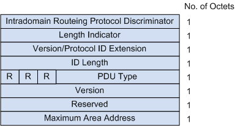
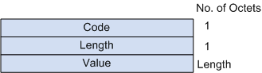
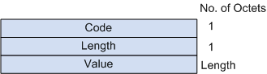

报文格式
IS-IS报文是直接封装在数据链路层的帧结构中的。PDU可以分为两个部分，报文头和变长字段部分。其中头部又可分为通用头部和专用头部。对于所有PDU来说，通用报头都是相同的，但专用报头根据PDU类型不同而有所差别。
IS-IS的PDU有4种类型：Hello报文，LSP，CSNP，PSNP。
图1 IS-IS的PDU格式

所有的PDU都有相同的通用头格式：
图2 IS-IS通用报头格式
- Intradomain Routing Protocol Discriminator：域内路由选择协议鉴别符，设置为0x83。
- Length Indicator：PDU头部的长度（包括通用头部和专用头部），以字节为单位。
- Version/Protocol ID Extension：版本/协议标识扩展，设置为1（0x01）。
- ID Length：NSAP地址或NET中System ID区域的长度。值为0时，表示System ID区域的长度为6字节。值为255时，表示System ID区域为空（即长度为0）。
- R（Reserved）：保留，设置为0。
- PDU Type：PDU的类型。IS-IS PDU共有9种类型，详细信息请参考下表。
- Version：设置为1（0x01）。
- Maximum Area Address：支持的最大区域个数。设置为1～254的整数，表示该IS-IS进程实际所允许的最大区域地址数；设置为0，表示该IS-IS进程最大只支持3个区域地址数。
| 类型值 | PDU类型 | 简称 |
|---|---|---|
| 15 | Level-1 LAN IS-IS Hello PDU | L1 LAN IIH |
| 16 | Level-2 LAN IS-IS Hello PDU | L2 LAN IIH |
| 17 | Point-to-Point IS-IS Hello PDU | P2P IIH |
| 18 | Level-1 Link State PDU | L1 LSP |
| 20 | Level-2 Link State PDU | L2 LSP |
| 24 | Level-1 Complete Sequence Numbers PDU | L1 CSNP |
| 25 | Level-2 Complete Sequence Numbers PDU | L2 CSNP |
| 26 | Level-1 Partial Sequence Numbers PDU | L1 PSNP |
| 27 | Level-2 Partial Sequence Numbers PDU | L2 PSNP |
CLV报文格式
PDU中的变长字段部分是多个CLV（Code-Length-Value）三元组。CLV也称为TLV（Type-Length-Value）。其格式如下图所示。
图3 CLV格式


不同PDU类型所包含的CLV是不同的。
| CLV Code | 名称 | 所应用的PDU类型 |
|---|---|---|
| 1 | Area Addresses | IIH、LSP |
| 2 | IS Neighbors（LSP） | LSP |
| 4 | Partition Designated Level2 IS | L2 LSP |
| 6 | IS Neighbors（MAC Address） | LAN IIH |
| 7 | IS Neighbors（SNPA Address） | LAN IIH |
| 8 | Padding | IIH |
| 9 | LSP Entries | SNP |
| 10 | Authentication Information | IIH、LSP、SNP |
| 128 | IP Internal Reachability Information | LSP |
| 129 | Protocols Supported | IIH、LSP |
| 130 | IP External Reachability Information | L2 LSP |
| 131 | Inter-Domain Routing Protocol Information | L2 LSP |
| 132 | IP Interface Address | IIH、LSP |
其中，Code值从1到10的CLV在ISO10589中定义（有2类未在上表中列出），其他几种CLV在RFC1195中定义。
报文示例
图4 IS-IS报文格式

参考标准
| 标准 | 描述 |
|---|---|
| ISO 10589 | ISO IS-IS Routing Protocol |
| RFC 1195 | Use of OSI IS-IS for Routing in TCP/IP and Dual Environments |